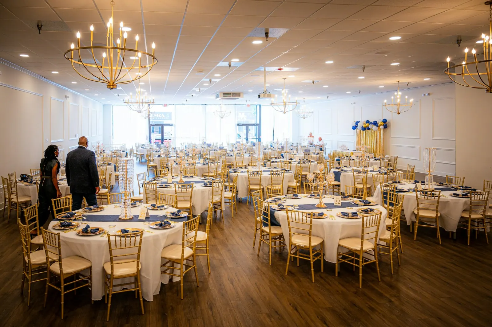
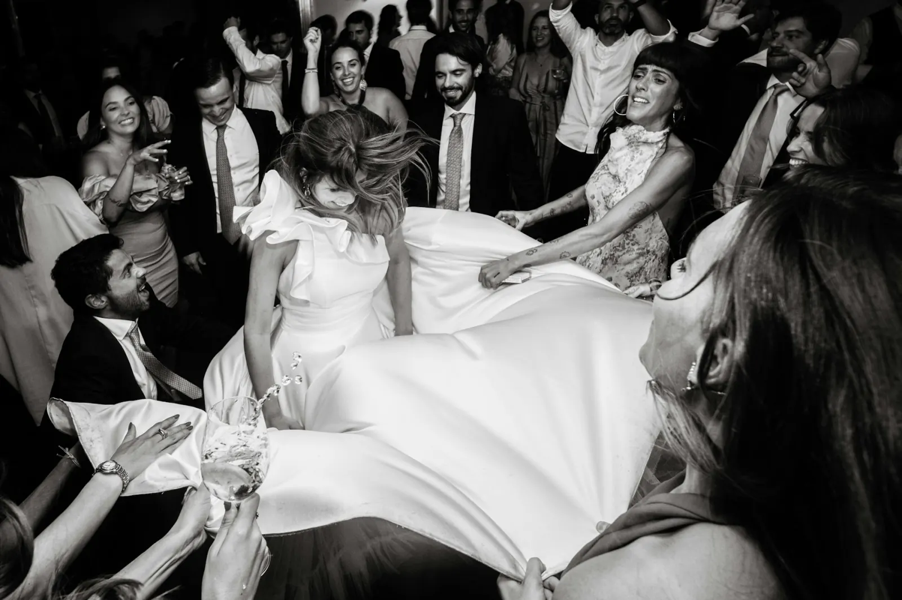
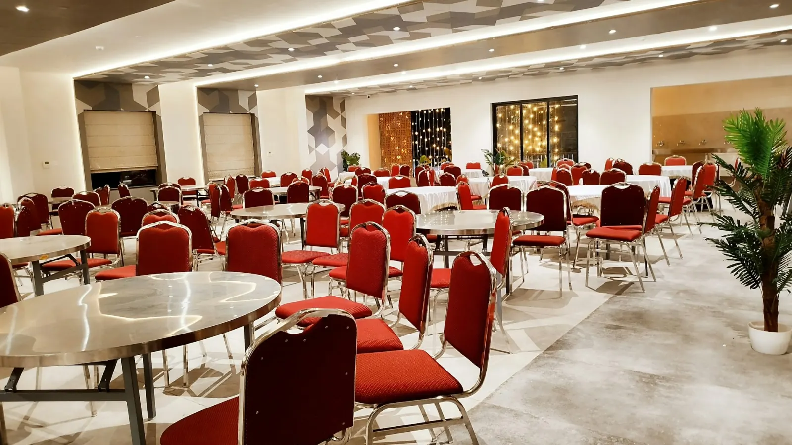
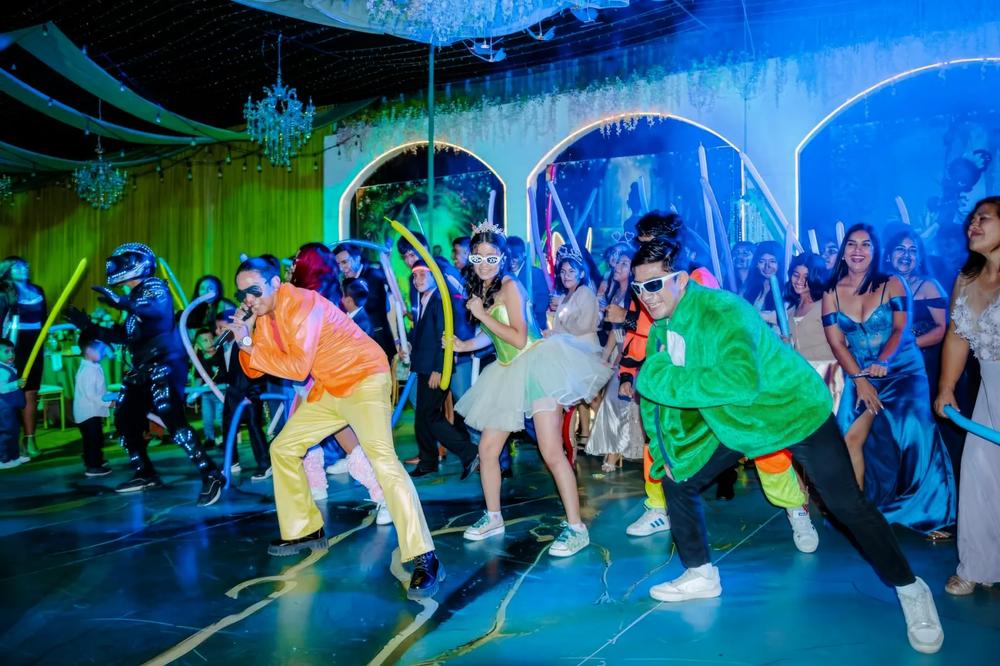
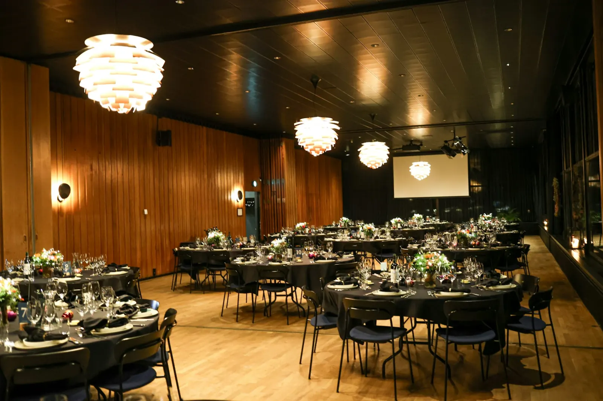
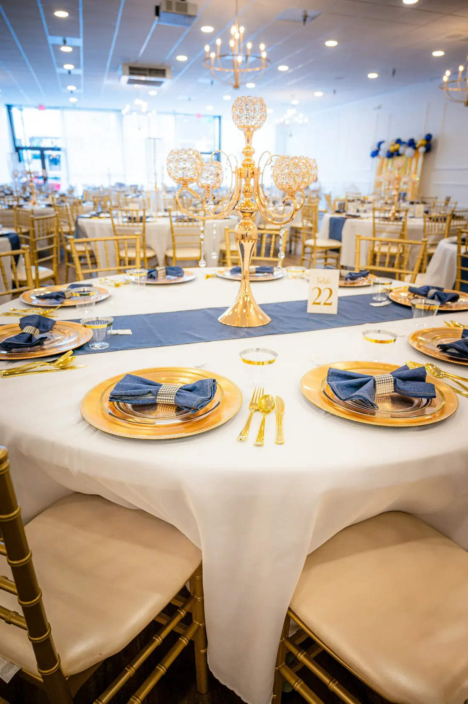
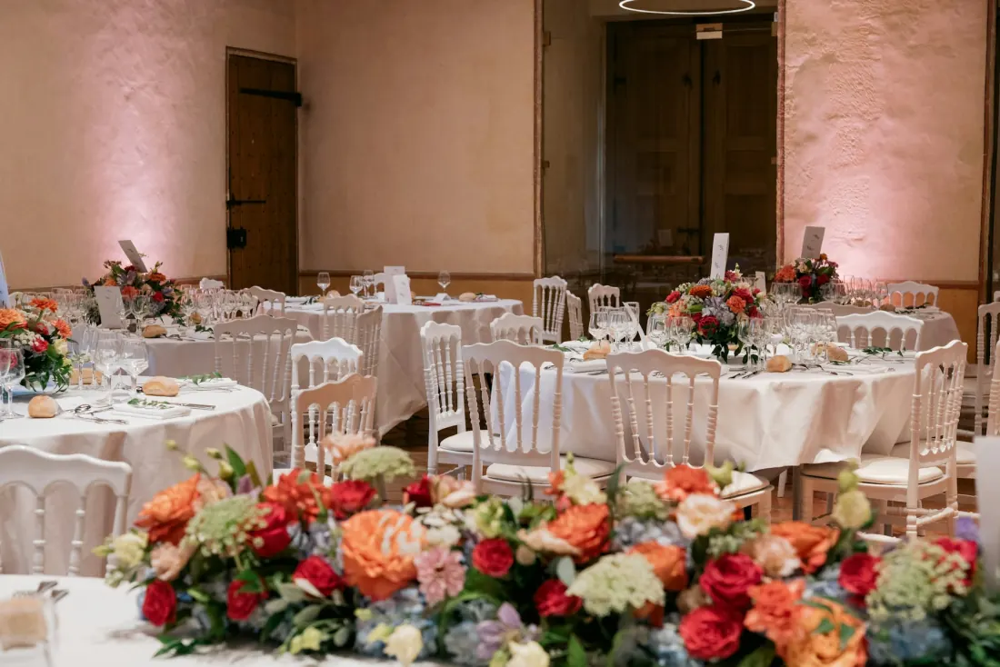
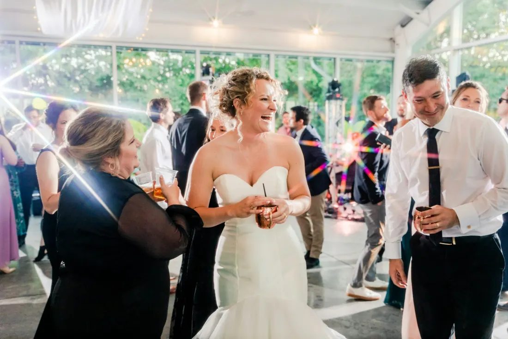
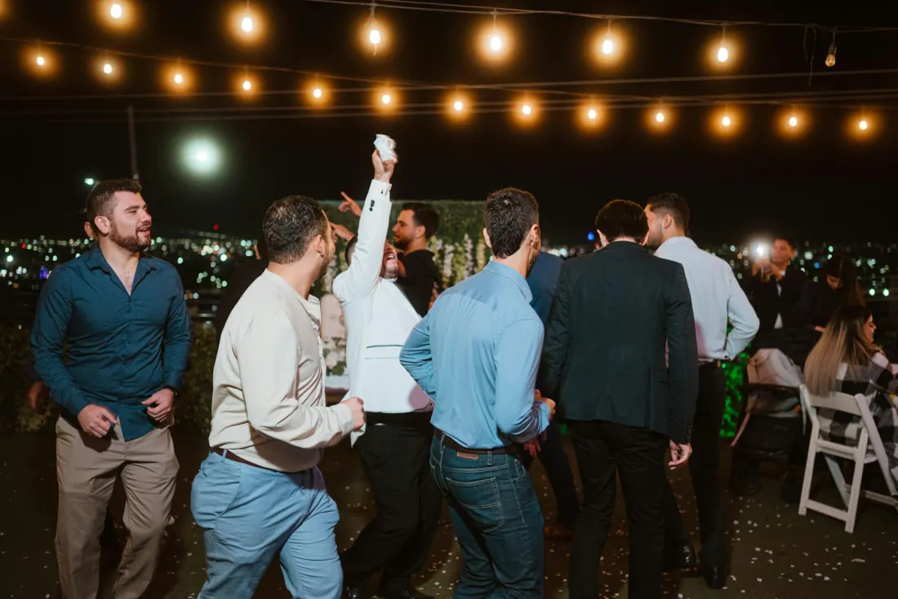
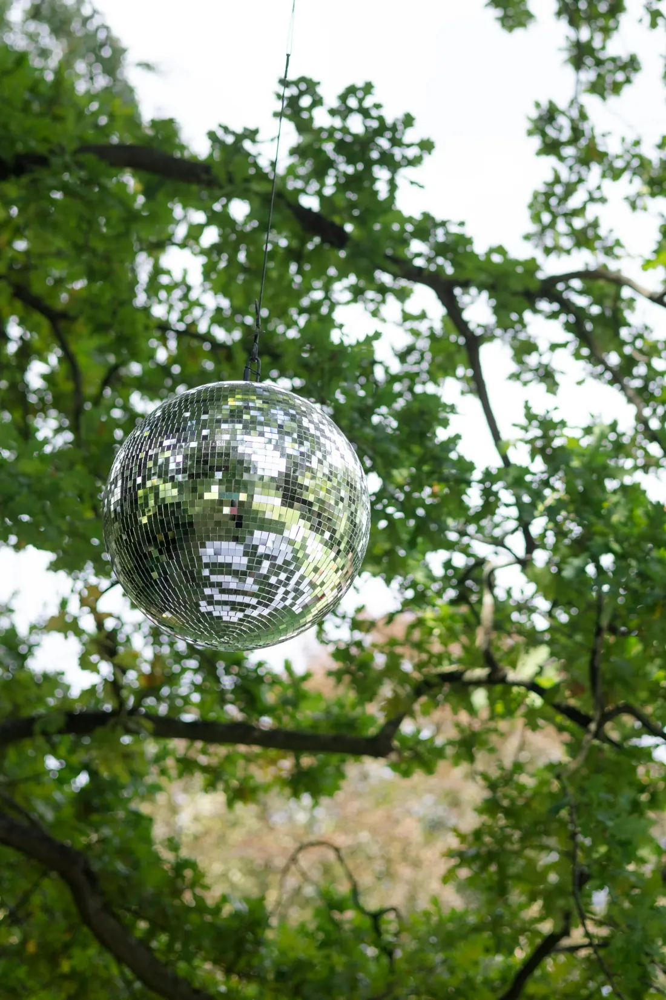

El lugar donde empieza la fiesta
Un salón amplio para bodas, XV años y las celebraciones que su familia va a recordar toda la vida.

Cabe toda su gente
El salón está pensado para eventos grandes sin que nadie quede apretado. Usted invita, nosotros tenemos el espacio.

Montaje listo
Mesas y sillas puestas antes de que llegue el primer invitado. Usted no tiene que cargar nada ni acomodar nada.

Pista libre
Un área despejada para el vals, la banda y la hora loca. Aquí la fiesta no se acaba porque no cabe la gente.

Todo en un lugar
Cocina, baños y estacionamiento en el mismo sitio. Sin sorpresas y sin andar rentando aparte.
Conozca el salón
Estas son fotografías de referencia. Al confirmar, se cambian por las de su salón y sus eventos reales.





Lo que se celebra aquí
Cada evento se monta distinto. Díganos qué tiene en mente y le decimos cómo lo acomodamos.
Qué incluye la renta
Lo decimos claro desde el principio, para que no haya cuentas sorpresa el día del evento.
Mesas y sillas montadas
Acomodadas según el número de invitados, listas antes de que usted llegue.
Área de cocina
Espacio equipado para que su servicio de banquete trabaje sin problema.
Estacionamiento
Sus invitados llegan y se van tranquilos, sin buscar dónde dejar el carro.
Sanitarios
Baños limpios y suficientes para damas y caballeros durante todo el evento.
Pista de baile
Área despejada para la música, el vals y el baile hasta el final.
Horario amplio
Tiempo para montar, celebrar y recoger sin que nadie los apure.
Un buen lugar hace la fiesta.Salón de Recepciones Las Ollas
Venga a conocerlo
- Dirección
- Av. Palestina #11106, col. Palestina, 31376 Chihuahua, Chih.
- Teléfono
- 614 278 3956
- Visitas
- Con gusto le mostramos el salón antes de que aparte su fecha
¿Ya tiene fecha en mente?
Mándenos el día y más o menos cuánta gente va a invitar. Le contestamos con precio y disponibilidad, sin compromiso.